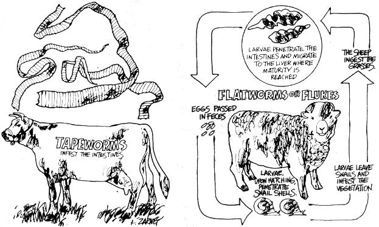

Beginning farmers usually do pretty well with gardens, chopping wood and building outhouses . . . but the birth of that first calf or litter of pigs generally sets 'em back a couple of notches. R.J. Holliday DVM, a veterinarian in Missouri and MOTHER contributor, intends to remedy the situation. His tool? A new handbook precisely designed to explain all the animal facts of life in language that new back-to-the-landers can understand.
MOTHER is serializing the manual as Dr. Holliday completes each chapter and here's installment No. 5.
No discussion of ruminant nutrition and management is complete without devoting some time to an understanding of the role played by internal parasites in disease conditions and in efficient production.
Cattle, sheep, and goats the world over support many kinds of internal parasites. Some of these hangers-on have no apparent ill effects on their hosts and seem only to be "along for the ride", while others cause such drastic symptoms that they make profitable production of livestock almost impossible the areas where they occur.
The damage done by these creatures is threefold:
First, and most obvious, heavily parasitized animals do not enjoy good health and they do not "do" as well as animals that harbor only a few worms. Young animals that are severely affected are often permanently stunted and never realize their full potential for size and productivity.
Second, it's expensive in both dollars and time to buy and to administer the drugs commonly used to deworm animals.
Third, and finally, a few of these parasites occasionally infect humans, which puts the necessity for some form of control on a more personal basis.
In this country the commonly found ruminant internal parasites fall into three classes: I 1I Nematodes or roundworms, 121 Cestodes or tapeworms and 131 Trematodes, otherwise known as flatworms or flukes.
There are several species of roundworms worthy of consideration. Haemonchus contortus, Ostertagia ostertagi and Trichostrongylus axei are found in the stomach. The intestines are inhabited by varieties of the genus Cooperia, the ruminant hookworm called Bunostomum phlebotomum and the nodular worms (0esoghagostomum radiatum). All these worms have similar life cycles, even though they vary in size from almost microscopic to about 1-1/4 inches long.
Mature roundworms live in the digestive tract, and the eggs produced there are eventually passed in the host animal's droppings. Warm, humid weather favors their development and, under proper conditions, the eggs soon hatch into larvae that are able to infect a new host within two to six days.
The infective roundworm larvae are able to migrate a short way up the blades of grass, and there they lie in wait until they either perish or some unfortunate beast comes along and them into its mouth with the desired forage. Some of the more daring species of immature roundworms can even burr, through a host animal's intact skin to gain entrance to body. The larvae continue to develop after this entry and, in three to four weeks, become adults in the gut of the new host. At this time they begin egg production and the life cycle is reestablished.
Tapeworms-flat, segmented, ribbon-like creatures that may be three-quarters of an inch wide and several feet long-are rather more complicated than roundworms. Tapeworm species whose adult stages are present in the ruminant- Moniezia expansa and M. benedeni -do relatively little damage to mature animals and cases of symptomatic disease caused by them occur only occasionally in sheep and in calves.
The head of the adult tapeworm attaches to the lining of the intestine and each segment of the creature is a separate reproductive unit. As they mature, the terminal segments-full of eggs-break off from the main body and are expelled by the host with its feces. The eggs next must be eaten by a free-living orabatid mite that frequents most moist pasture areas. Larval development takes place within the mite and, if the infected mite is then consumed by a ruminant, the larvae mature in the gut of the new host and the process begins anew.
The adult stages of two additional tapeworms- Taenia echinococcus and T. hydatigena -occur in dogs, wolves, and other members of the canine family rather than in ruminants, Cattle, however, do become infected with the parasites by ingesting the eggs in feed or water that has been contaminated with the feces of infected dogs.
The larvae then penetrate the afflicted cow's gut wall and are carried by its blood stream to selected sites in the body organs or muscles, where they form cysts. These cystic stages-called Echinococcus granulosus and Cysticercus tenuicollis -take the form of fluid-filled sacs up to one inch in diameter. A common name for the sacs is hydatid cysts . . . and they may or may not cause symptoms, depending on their location in the body. A canine becomes the new host for Taenia echinococcus and T. hydatigena by eating tissues containing these cysts.
The so-called "beef tapeworm of man" ( T. saginata) has a similar life cycle involving cattle and people. Cattle are subjected to T. saginata cystic infection after exposure to the tapeworm's eggs in feed or water contaminated with feces from people who have consumed the cysts in improperly cooked meat.
The widespread use of flush-toilets has practically eliminated this parasite, but it is possible that it could again become a problem in some rural settings where human wastes are not disposed of properly.
Only three kinds of liver flukes occur in the continental United States. Fascioloides magna is a natural parasite of deer, elk and moose in many of the states bordering Canada. Dicrocoelium dendriticum, the lancet fluke, occurs only in a small area in central New York State. The common liver fluke (Fasciola hepatica) is found in the Southeast, the Gulf Coast, parts of the Southwest, the Rocky Mountain region and the Pacific Coast states . . . where it has been found to infect deer, cattle, sheep, goats, rabbits, swine, horses and humans.
Flukes-flat leaf-like creatures that range in size from one-half inch up to four inches in length-are by no means as common as roundworms, but in areas where they do exist they're worthy of consideration.
Flukes have a fascinating and very complex life cycle. The adults live in the bile ducts of a ruminant's liver and pass their eggs into the intestines where they're voided in the host animal's droppings. In water, these eggs hatch into a larval stage called miracidia, which will perish unless they find and penetrate into the body of a water snail within a few hours. Inside the snail the miracidia grow and multiply and finally emerge as an intermediate stage called cercariae.
The cercariae form cysts on submerged plants or other objects and enter their new host with contaminated plants or water. Once in the body, the parasites then migrate through the tissues until they finally find their way to the liver to complete the cycle.
The life cycle of the lancet fluke is even more complicated than that of other flatworms. Once its eggs are expelled, the species' larvae must develop in a dry-land snail, then further mature in the body of an ant (Formica fusca) . . . and THEN the ant must be eaten by the final host.
Flukes are often responsible for poor gains in young animals and in older animals that have been undernourished. The greatest economic loss is from the livers that are condemned at slaughter because of enlarged bile ducts and other damage.
Much of the danger and economic loss ruminant parasites cause can be eliminated by the application of a few, often overlooked, management practices . . . the most important of which is the early detection of the culprits.
Symptoms shown by animals that are heavily parasitized can vary a great deal, depending on the number and kinds of worms present. Anemia, a fairly common indication of infestation, is caused by roundworms drawing blood from the lining of the gut and may be coupled with a poor appetite and slow gains or actual weight loss.
A persistent watery diarrhea and a dry hacking cough also may be noticed and an animal afflicted with worms will usually have an unthrifty appearance, dull eyes and a rough, dry haircoat.
In short, the worm-ridden ruminant is in a very run-down condition, and looks it. In this state, the animal is very susceptible to other infections of a bacterial or viral nature. If you notice any of these symptoms in your cattle, sheep, or goats, (this discussion applies to all three) it would be wise to consider a diagnosis of parasitism.
Your next step should be to collect a small sample, one or two ounces, of fresh droppings from each affected animal and take it to your veterinarian for analysis. He will examine the specimen microscopically to determine which-if any-worms are present. If there is an infestation, the vet will be able to estimate its severity by identifying and counting the parasite eggs present in a measured amount of the sample. This service also available from some private laboratories and possibly from your State Agricultural Extension Service.
"Cu-Nic Solution", administered at proper intervals and used in conjunction with an overall program of sound management practices, will satisfactorily control most of the commonly encountered ruminant roundworms and tapeworm.
This solution can be easily prepared at home. Dissolve one ounce (by weight) of copper sulfate crystals or powder in three quarts of soft water. It may be necessary to heat the water to get all the crystals to disperse. When the mixture has cooled, add one fluid ounce of 40% nicotine sulfate (Black-Leaf Leaf 40).
This Cu-Nic solution is administered orally, as a drench, at the following rates: sheep and goats, one fluid ounce for each 20 pounds of body weight, to a maximum dose of four ounces; calves, two to four ounces: yearling cattle, four to six ounces; adult cattle, 12 to 16 ounces. If necessary. the dosage can be repeated at 30-day intervals.
Lead arsenate in doses of up to two grams in mature cattle has been used to kill tapeworms, but I consider this a pretty drastic remedy for no more trouble than tapeworms usually cause.
Most adult flukes can be removed from a ruminant's bile ducts by drenching the animal with a hexachloroethane-bentonite solution at the rate of 20 cc's for each 100 pounds of body weight. This can be very drastic and I suggest you consult your vet if flukes are a problem.
Many commercial wormers are now available, and they do have two distinct advantages: [1] they can be administered in the afflicted animal's feed and [2] they're more effective against the worm's immature stages. Some of these chemicals (systemics) are actually absorbed into a treated ruminant's system and will kill parasites that are not even located in the digestive tract. I can't help but wonder what effect these chemicals have on the people who later eat the meat and drink the milk from such an animal.
Of the newer wormers, thiabendazole is probably the best compromise between safety and efficacy. A recent report in the October 1972 issue of VETERINARY MEDICINE & SMALL ANIMAL CLINICIAN evaluating the use of thiabendazole and another drug-levamisole HCl-in commercial feed-lot cattle stated that the thiabendazole increased the efficiency of the cattle over that of the controls, but the use of levamisole HC1 resulted in a decrease in efficiency (even when compared to the untreated, wormy control animals). The second drug apparently killed just as many worms, but it also seemed to have a rather pronounced growth inhibiting effect. The manufacturer doesn't seem to mention that fact in his advertising.
Now that we have the animals reasonably free of internal parasites, let's keep them that way. As with other diseases, prevention is of the utmost importance and the basic reason for any control measure is to limit the livestock's exposure to infective larvae. This is especially true for animals that are young, stressed, sick . . . and for those that have not yet had a chance to build a solid resistance.
Pasture rotation is the best single method of accomplishing this goal. Animals should not be allowed to graze any one area for longer than about three weeks or until the forage is cropped short. The section of pasture should then remain idle for at least six weeks, and preferably longer (which is a good idea for the land, in any case).
Using this system, the animals are removed from the grazing area before most of the newly hatched larvae become infective and before the ruminants are forced to eat too close to the soil surface (where there's a heavier concentration of the larvae). Then too, allowing the pasture to lie idle insures that most of the larvae will have died before the animals return.
To avoid reinfesting the gazing area with tapeworm eggs it's advisable to exclude all stray dogs by whatever means required and to avoid any contamination of the pastures with untreated human wastes.
Ponds and wet marshy areas are favorable places for the development of roundworm larvae and for the snails that harbor flukes. Fencing or draining these areas will do much to limit exposure.
Try to arrange calving or lambing dates so that the young are born in late winter or early spring. The cold weather tards the development of the parasites' eggs and larvae, thus giving the lambs and calves a head start in their race for healthy existence.
If conditions justify worming your entire herd or flock, so in winter when the animals are normally confined to a smaller area . . . or can be temporarily penned in a space that can either be thoroughly cleaned or left idle for the rest of the season.
Even though the adult parasites are killed by the worming treatments, their eggs are still alive and the droppings containing them should be disposed of where the eggs will not be a source of reinfection. (Any uncomposted manure hauled from the barnyard area should be spread on cropland and not on the pastures.)
For the same reason, whenever you worm animals on pasture, try to rotate the livestock to a clean grazing area within few days. It's also a good idea to drag all pastures with a harrow in the fall to break up the accumulations of animal droppings and expose the worm eggs and larvae to the killing effects of drying and freezing.
While good management is important for parasite control good nutrition is imperative. If an animal is in robust health and is receiving a properly balanced diet containing all the essential vitamins and minerals, it's doubtful if a moderate . posure to worms would ever cause symptoms. So, if for any reason you cannot follow all of these recommendations, by means follow this one: Feed your animals the most natural, nutritious, additive-free ration you can devise! This will a kill any worms, but it will enable the livestock to develop resistance necessary to combat these parasites on an equal footing.
Healthy, well-nourished animals seem to have the ability to develop a relative immunity to most internal parasites. The exact mechanism is unknown, but we have learned that when this immune state exists, the majority of infective larvae taken into the body fail to develop into adult parasites capable of reproduction.
In effect, the naturally immune animal seems to set a limit on the number of parasites it will tolerate. Worming the animal will drop this number only temporarily and a moderate increase in exposure will not result in any appreciable increase the total number of adult parasites in the host. The total worm load can, however, be reduced by lowering the level of exposure to the infective larvae. (These facts are seldom mentioned in the advertisements for most chemical wormers.)
A young animal is much less resistant to parasites than is adult. Calves, lambs and kids that suffer from a heavy load worms are frequently permanently stunted and even adults suffer lasting damage. Any animal that is malnourished, or sickly, or one subjected to a massive parasitic infection will usually be unable to build any resistance at all. In this case classic symptoms outlined above will develop, and steps must be taken to rid the animal of the bulk of the worms before death results. Bear in mind that almost all recognized cases will be due to a mixed infection involving many different kinds parasites.
Remember the old saying: "There is no shame in having fleas, unless you're not trying to get rid of them." The same thought applies to internal parasites in your livestock.
If you're thinking of buying a horse, watch for"Get a Horse . . . But Read This First!" . . . the next installmentTHE HERDSMAN'S HANDBOOK.
|
|
 |
|